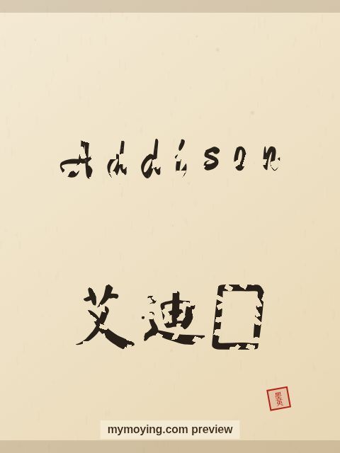

Addison in Chinese Calligraphy
Here is Addison in Chinese calligraphy — the English letters drawn in brush style, plus the Chinese form 艾迪生.

Sample. “Addison” in the Regular (楷书) brush style with the Chinese name 艾迪生 (Ài dí shēng). The paid file removes the watermark.
The Chinese characters for Addison
As a transliteration, Addison is usually written 艾迪生 (Ài dí shēng). Each character is listed below with its own dictionary meaning — the name is chosen by sound, not by meaning, and Moying does not translate names. Please have a person review the characters before any permanent use such as a tattoo.
Origin and meaning
The name Addison has English roots and means “son of Adam”.
About the name Addison
A surname meaning 'son of Adam' that became a top girls' pick in the 2000s.
As a gift or a tattoo
People often order Addison as a framed gift or as a tattoo — the meaning, “son of Adam”, is part of the appeal.
Open Addison in the generatorFree watermarked preview. $1.99 once for a clean high-resolution download of this name in every style and setting. No subscription. Digital product, delivered instantly; see Terms.